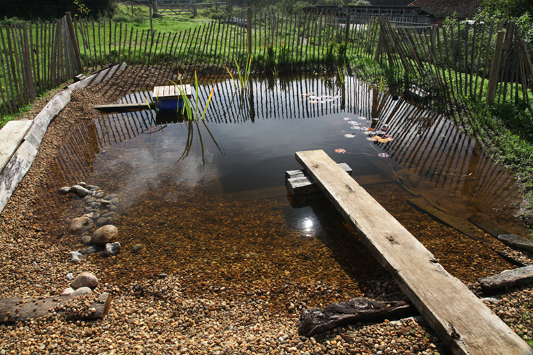

The plunge pool is a proper organic pool (natural swimming pool), only smaller. And this one is small enough to fit in a modest garden to bring the delights of plunging into organic water to more of us.
My kids love this pool; they feel comfortable learning to swim in deep water knowing they can reach the shallows with a single kick of doggy paddle and an outstretched arm. It is somehow manages to achieve being simultaneously cottage garden cosy and yet a sparkling wilderness.
This pool covers an area of 48 squrare metres (6mx8m) with a 2.2m deep swimming or plunging zone measuring 4 metres by 2 metres. Come on one of my courses and I'll show you how you can make this organic pool.
Starting to dig the 4m by 2m swimming (plunging) zone.
Finishing the planted zone retaining wall.
The new plunge pool just completed, October 2010.

The plunge pool eight months after completion. I have moved the fence, built a little jetty over the filter and removed the architectural brutalism of the plank propped on concrete blocks. June 2011.
by
originally published on www.organicpools.co.uk